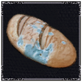

Tabla de mecanicas de Fear & Hunger
| Mecánico de juego | Descripción |
|---|---|
|

Hambre |
El hambre, como en la vida real, desempeña un papel vital en tu supervivencia. Cuanto más hambriento estés, más débil te volverás. Si dejas que tu personaje (o los miembros de tu grupo) pasen más hambre, se debilitarán y su capacidad de combate se verá afectada. |

Mente |
Tu cordura se agota y el tiempo corre en tu contra. El personaje del jugador y los miembros de su grupo tienen cada uno un medidor mental, que se agota lentamente a medida que viajan por la oscuridad y se encuentran con horrores. La locura que te rodea (a ti y a tu grupo) irá consumiendo tu mente a medida que avances por la mazmorra. No mantener la mente de una persona tendrá graves consecuencias. |

Lanzamiento de moneda |
Un evento que dicta un resultado bueno o malo en diferentes circunstancias, desde un simple botín de cofre hasta situaciones de vida o muerte. Los lanzamientos de monedas añaden un elemento de aleatoriedad a la dinámica del juego. |

Desmembramiento |
Sólo tienes cuatro extremidades, por lo que cada una es un bien valioso... y es probable que tú, los miembros de tu grupo y tus enemigos las perdáis a lo largo del viaje. La pérdida de extremidades tiene consecuencias tanto en combate como en el mundo exterior, y a menudo inhibe la capacidad de luchar o moverse. |